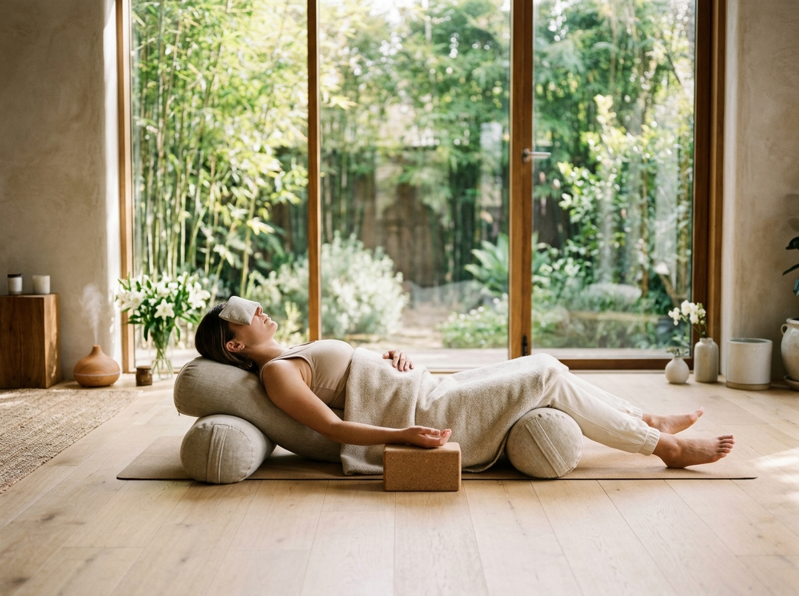
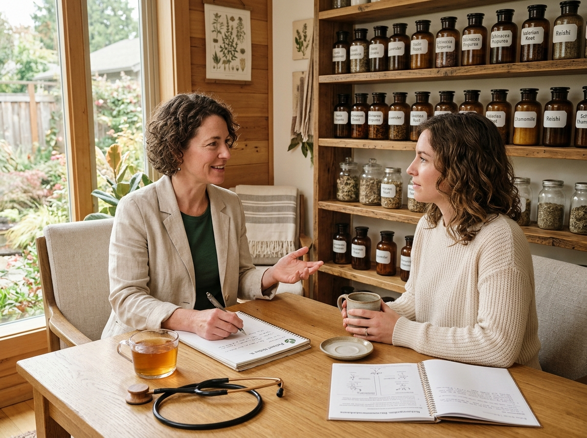
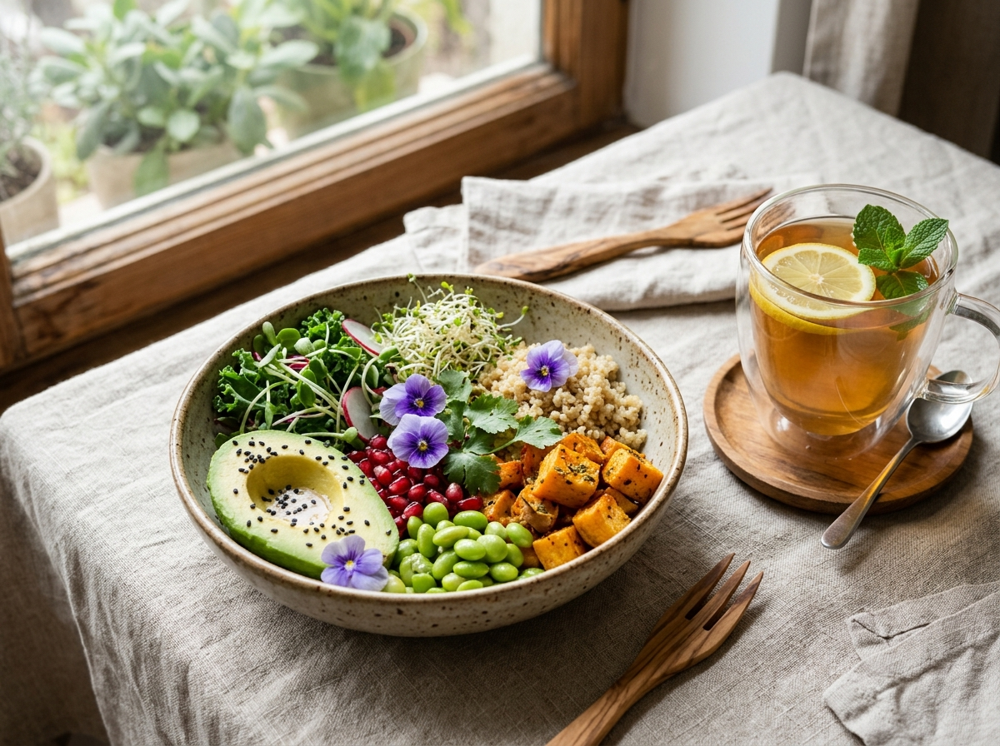

Movement & AlignmentTherapeutic Yoga Chikitsa
Individualized asana alignments, mindful stretching sequences, and posture awareness designed to alleviate muscle tension and encourage spine flexibility.
Welcome to Sattva, where time-tested naturopathic therapies and gentle yogic practices come together in harmony. Our physician-guided care supports your body’s natural rhythm, helping you discover lasting vitality, mental clarity, and restful ease.
Supportive wellness therapies designed around your daily lifestyle and physical comfort.
At Sattva, our approach honors the innate wisdom of the human body. Rather than offering temporary fixes, we take the time to understand your daily routines, stress patterns, and energy levels.
By combining certified naturopathic consultations with therapeutic yoga postures, mindful breathing, gentle water therapy, and wholesome nutrition, we provide a welcoming sanctuary where your body can unwind, recalibrate, and regain its natural equilibrium.
Comprehensive one-on-one sessions that give you space to share your wellness goals.
Practical wellness habits you can easily carry back into your everyday home routine.
Explore our six foundational therapeutic services, thoughtfully tailored to support relaxation, alignment, and revitalized daily living.

Movement & AlignmentIndividualized asana alignments, mindful stretching sequences, and posture awareness designed to alleviate muscle tension and encourage spine flexibility.

Physician-GuidedA thorough lifestyle assessment focusing on digestive balance, energy rhythms, sleep hygiene, and individualized restorative nature-care strategies.
Systematic progressive body relaxation and guided visualization that gently quiet an overactive mind and ease cumulative daily nervous exhaustion.
Conscious respiratory techniques including alternate nostril breathing and diaphragmatic pacing to deepen oxygenation and cultivate inner equilibrium.
Rhythmic manual therapy utilizing organic infused botanical oils to improve localized circulation, soften tight tendons, and soothe fatigue.

NourishmentPractical guidance on seasonal whole foods, gentle herbal broths, and sensible dietary rhythms that nourish digestion and sustain natural energy.
We guide your therapeutic experience through four thoughtful stages, making your path to natural wellness clear, gentle, and reassuring.
Meet with your attending physician for a relaxed, comprehensive discussion of your health history, current habits, and wellbeing aspirations.
Receive a customized schedule pairing targeted yoga therapies, soothing water care, and nutritional adjustments suited to your lifestyle.
Experience attentive one-on-one sessions in our peaceful therapy suites, guided by compassionate and experienced practitioners.
Reflect together on your physical improvements, receive practical home care recommendations, and sustain your newfound vitality.
Our experienced team brings decades of clinical practice in accredited naturopathy and therapeutic yoga sciences.
 Chief Medical Director
Chief Medical Director
Dedicated to evidence-based nature cure, autonomic nervous system balance, and gentle clinical hydrotherapy protocols for long-term health.
 Head of Yoga Therapy
Head of Yoga Therapy
Specializes in therapeutic musculoskeletal asana correction, breathwork for stress alleviation, and tailored mindful movement practices.
 Acupuncture Specialist
Acupuncture Specialist
Specializes in micro-meridian stimulation, pressure-point reflexology, and therapeutic mineral mud applications designed to alleviate joint and muscular tension.
Whether you seek relief from chronic daily stress, posture rejuvenation, or a peaceful restorative reset, our doors are open to support you.